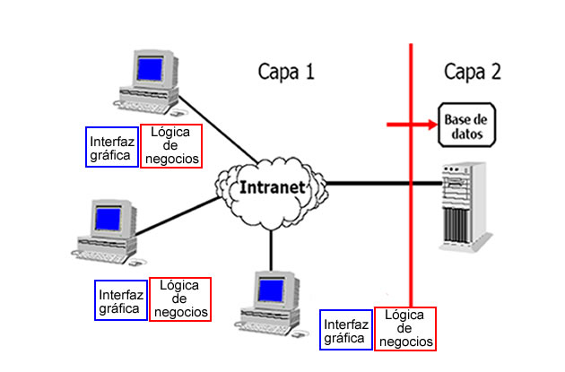
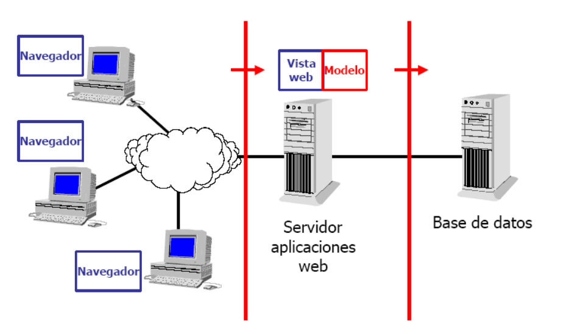
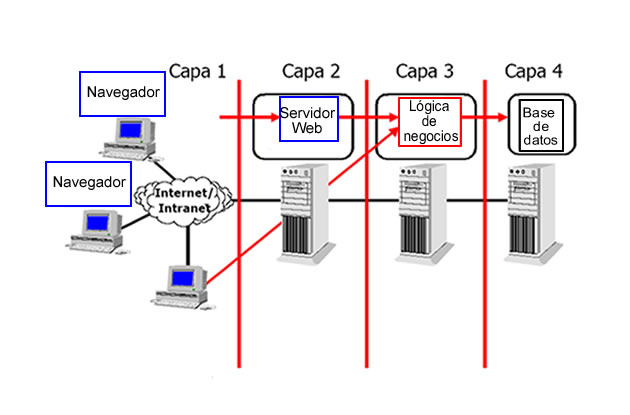

La arquitectura Cliente/Servidor comenzó a tomar forma en las décadas de 1960 y 1970, en un contexto en el que las computadoras mainframe dominaban la escena informática. En ese tiempo, las operaciones informáticas eran centralizadas, con usuarios que interactuaban con terminales tontos conectados a un mainframe, que realizaba todo el procesamiento y almacenamiento de datos. Este modelo, aunque eficaz, era limitado por la dependencia de un único sistema central. Con el avance de la tecnología, especialmente en la década de 1980, surgió la necesidad de un sistema más flexible y escalable, lo que llevó a la conceptualización y adopción de la arquitectura Cliente/Servidor. Este nuevo modelo permitió que las tareas se distribuyeran entre múltiples sistemas, donde los clientes podían interactuar de manera más directa y personalizada con los servidores.
El desarrollo de redes como Ethernet y el protocolo TCP/IP también fue crucial para el surgimiento de esta arquitectura, ya que permitieron la comunicación eficiente entre clientes y servidores a través de redes locales y globales. Con la expansión de Internet en la década de 1990, la arquitectura Cliente/Servidor se consolidó como el estándar para la mayoría de las aplicaciones distribuidas, sentando las bases para el desarrollo de la web tal como la conocemos hoy en día.
Este modelo no solo revolucionó la forma en que se diseñaban y desplegaban las aplicaciones, sino que también abrió la puerta a nuevas formas de interacción entre sistemas y usuarios, impulsando la creación de aplicaciones web, servicios en la nube, y otros avances tecnológicos que dependen de la interacción constante entre clientes y servidores.
¿De que Trata la Arquitectura Cliente/Servidor?
La arquitectura Cliente/Servidor es un modelo de diseño de sistemas distribuidos en el que las tareas o cargas de trabajo se dividen entre los proveedores de recursos o servicios, llamados servidores, y los consumidores de esos servicios, llamados clientes. En este modelo, los clientes son dispositivos o programas que envían solicitudes a un servidor para obtener datos, realizar operaciones o acceder a recursos específicos. El servidor, por su parte, es una máquina que recibe y procesa las solicitudes, proporcionando las respuestas o recursos necesarios al cliente.
Este modelo es fundamental en la informática moderna, ya que permite que múltiples clientes accedan a servicios compartidos, como bases de datos, aplicaciones web, archivos, y recursos de red, a través de una red, como una LAN o Internet. La arquitectura Cliente/Servidor es ampliamente utilizada en aplicaciones web, correo electrónico, bases de datos, y más, permitiendo una gestión eficiente y centralizada de los recursos, así como una distribución efectiva de las cargas de trabajo.
 Imagen extraída del blog
Infranetworking
.
Imagen extraída del blog
Infranetworking
.
Componentes de la Arquitectura Cliente/Servidor
Esta arquitectura o modelo esta compuesta por seis componentes basicos que nos permiten entender de mejor la estructura de este modelo:
Red
La red es el conjunto de infraestructura y tecnología que permite la comunicación entre dispositivos en un sistema cliente-servidor. Se puede tratar de una red local (LAN) o una red de área amplia (WAN), incluyendo la Internet. Su función principal es facilitar el intercambio de datos entre el cliente y el servidor, asegurando que las solicitudes y respuestas sean transmitidas de manera eficiente y confiable.
Cliente
El cliente es el dispositivo o aplicación que realiza solicitudes a un servidor para acceder a servicios o recursos. Puede ser un navegador web, una aplicación móvil, o una aplicación de escritorio. El cliente es responsable de la interfaz de usuario y de interactuar con el usuario final, enviando solicitudes al servidor y mostrando la información recibida.
Servidor
El servidor es el componente que proporciona servicios o recursos a los clientes. Puede ser una máquina física o un servicio en la nube, y está diseñado para recibir, procesar solicitudes, y devolver respuestas. Los servidores pueden ofrecer una variedad de servicios, como páginas web, almacenamiento de datos, o servicios de correo electrónico.
Protocolo
Un protocolo es un conjunto de reglas y estándares que definen cómo se comunican los dispositivos en una red. Estos protocolos especifican el formato y la secuencia de los mensajes intercambiados, asegurando que la comunicación entre cliente y servidor sea clara y coherente. Ejemplos incluyen HTTP para la web y TCP/IP para la transmisión de datos.
Servicios
Los servicios son las funcionalidades que un servidor ofrece a los clientes. Estos pueden incluir tareas como la entrega de contenido web, la autenticación de usuarios, o la gestión de datos. Los servicios permiten a los clientes acceder a recursos específicos y realizar operaciones que son gestionadas y procesadas por el servidor.
Bases de Datos
Una base de datos es un sistema organizado para almacenar y gestionar datos estructurados. Los servidores utilizan bases de datos para guardar, recuperar, y manipular información en respuesta a las solicitudes de los clientes. Las bases de datos pueden ser relacionales, con tablas y relaciones definidas, o no relacionales, con estructuras más flexibles.
Tipos de Arquitecturas
Existen diferentes tipos de arquitecturas según cuántas capas se utilizan para separar y manejar esas responsabilidades. Entre los más comunes están las arquitecturas de dos capas, tres capas y n capas. Cada una ofrece un enfoque distinto para organizar el sistema, facilitando la gestión y escalabilidad.
Arquitectura en Dos Capas
En una arquitectura de dos capas, el sistema se divide en dos componentes principales: el cliente y el servidor. El cliente es responsable de la interfaz de usuario y de enviar solicitudes, mientras que el servidor maneja la lógica de negocio y la gestión de datos. En esta arquitectura, el servidor puede ser una base de datos o una aplicación que procesa directamente las solicitudes del cliente. La comunicación entre cliente y servidor ocurre directamente, lo que puede simplificar el diseño pero también puede limitar la escalabilidad y la flexibilidad, ya que toda la lógica y el manejo de datos están centralizados en el servidor.
 Imagen extraída del blog wordpress .Arquitectura en Tres Capas
La arquitectura de tres capas introduce una capa adicional entre el cliente y el servidor, dividiendo el sistema en tres componentes: la capa de presentación, la capa de lógica de negocio y la capa de datos. La capa de presentación (o cliente) es responsable de la interfaz de usuario y de interactuar con el usuario final. La capa de lógica de negocio maneja la lógica de procesamiento y toma decisiones basadas en las solicitudes recibidas. Finalmente, la capa de datos (o base de datos) se encarga del almacenamiento y la gestión de los datos. Esta separación permite una mayor modularidad, facilita el mantenimiento y mejora la escalabilidad, ya que cada capa puede evolucionar de manera independiente.
 Imagen extraída del blog wordpress .Arquitectura en N Capas
La arquitectura de n capas (o arquitectura multinivel) es una extensión de la arquitectura de tres capas, en la que se añaden más capas para gestionar aspectos específicos del sistema. Estas capas adicionales pueden incluir la capa de presentación, la capa de lógica de negocio, la capa de acceso a datos, y otros niveles como la capa de servicios, la capa de integración, y la capa de seguridad, entre otras. La arquitectura de n capas proporciona una gran flexibilidad y escalabilidad, permitiendo que diferentes aspectos del sistema se gestionen en capas separadas. Esto facilita la implementación de grandes sistemas empresariales, ya que cada capa puede ser especializada para cumplir funciones específicas y colaborar con otras capas para ofrecer una solución integral.
 Imagen extraída del blog wordpress .¿Que nos Depara el Futuro con el Avance de las IA?
El futuro parece prometedor y dinámico, con la continua evolución de la tecnología y las necesidades de los usuarios. A medida que la computación en la nube, el edge computing y la inteligencia artificial ganan protagonismo, la arquitectura cliente-servidor se adapta y expande para manejar mayores volúmenes de datos y ofrecer servicios más rápidos y personalizados. La flexibilidad y escalabilidad de esta arquitectura la mantienen relevante, permitiendo la integración de nuevas tecnologías y la mejora continua en la experiencia del usuario. En resumen, aunque el panorama tecnológico cambie, la arquitectura cliente-servidor seguirá siendo un pilar fundamental en la construcción de sistemas eficientes y robustos.